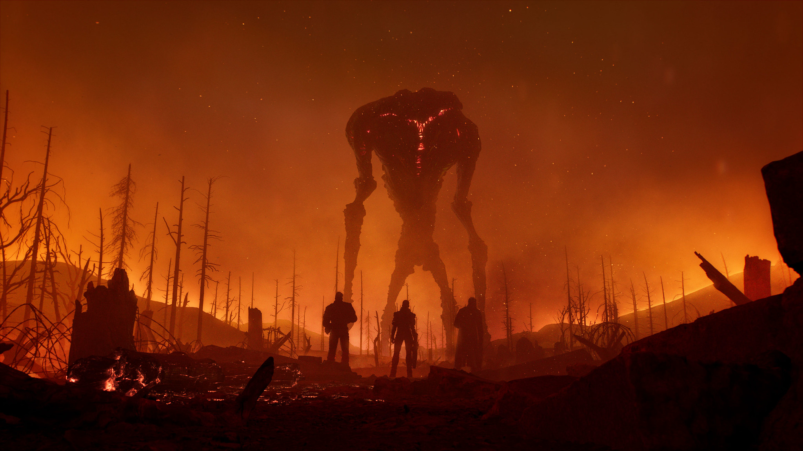
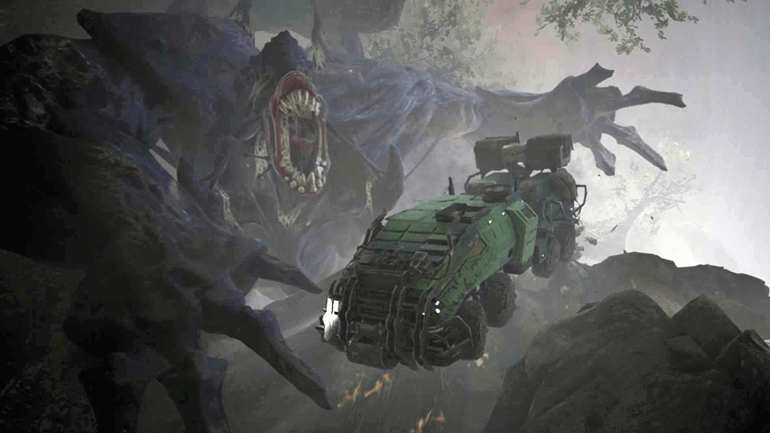
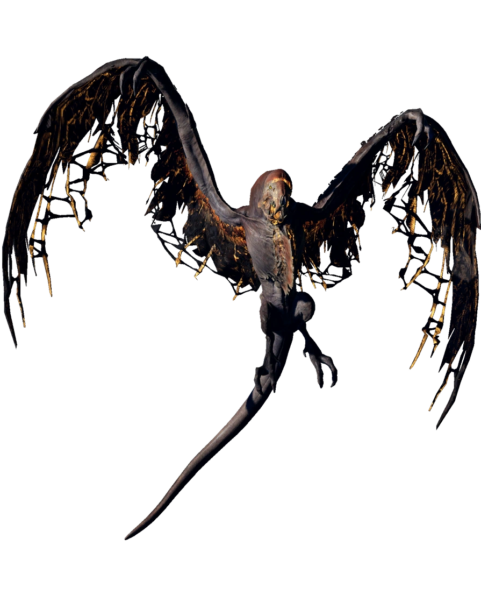

Creatures:
Storm Carrier:
The Strorm Carrier is a giant creature that is approximately a height of 50m and a length of 12m.These creatures seem unbothered by the presence of others.But if provoked the Storm Carrier will rain destruction and annihilate anything that challenges it.
Chrysaloid:
A giant of the Forest that shakes the ground with its every movement. Among Enoch's largest witnessed creatures, the Chrysaloid reaches the height of a skyskraper, slamming its enormous arms like wrecking balls, tearing up and throwing mountains and trees. Several characteristics point to the Chrysaloid having insectoid ancestors, mainly the overgrown mandibles around its mouth, the remains of what may have once been wings on its back, and the cocoon which it still has not grown out of.
Sciathan
These large and vicious creatures are close in morphology to Earth's prehistoric flying reptiles. Skeletal looking and nimble, the Sciathan appears to have evolved a greater affinity to the Anomaly, which has gifted the creature with the power to manipulate electrical currents. Having lost most of the flesh that once stuck to its bones, some may say the Sciathan finds sustenance on Anomaly energy alone, and only because of a natural instinct does it continue to hunt and feast on prey.
